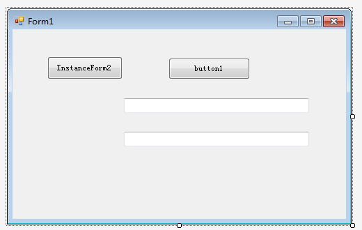
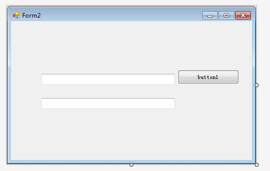
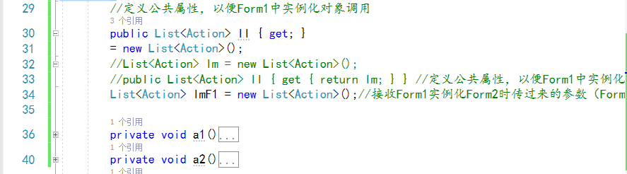
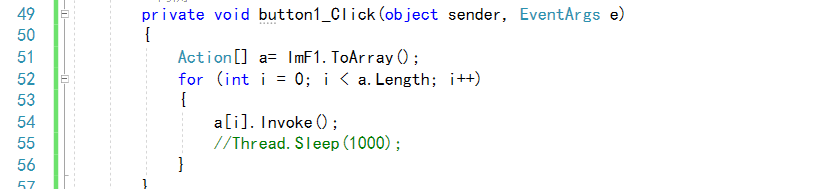
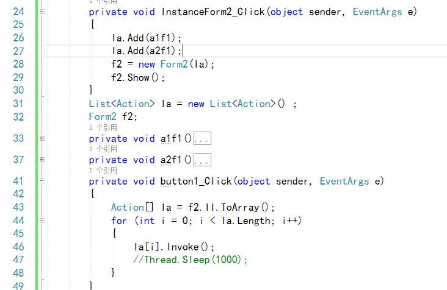
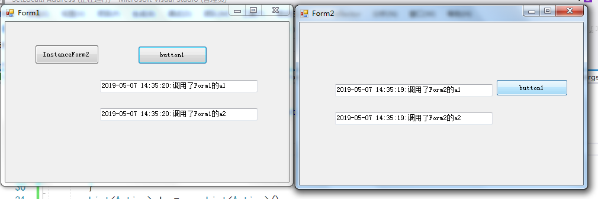

原文出处:本文由博客园博主cppc提供。
原文连接:https://www.cnblogs.com/sendreceive/p/10825599.html
原文连接:https://www.cnblogs.com/sendreceive/p/10825599.html
直接切入主题
有时候同一个项目下我们可能会使用多个窗体，窗体间方法互相调用也不可避免，好了，使用无参无返回值的方法，开始上图
1、新建一个winform项目Form1，并再添加一个窗体Form2；拖入button和textbox，如下

2、先编辑Form2，定义属性存放无参无返回值的方法，重载Form2的构造函数，处理相关方法



1 public Form2(List<Action> a) //public List<Action> Form2m(params Action[] a)
2 {
3 ll.Add(a1);
4 ll.Add(a2);
5 lmF1 = a;
6 InitializeComponent();
7
8 }3、按钮单击事件调用Form1的方法

4、接下来编辑Form1的代码，这个就更简单了：
先定义List<Action>集合，用于存放无参无返回值的方法们....
实例化窗体按钮的单击事件实例化Form2对象并显示
然后就可以愉快的测试了
Form1主要代码如下

测试结果：

源码已开源到GitHub，欢迎Star，欢迎互相交流：QQ 649499016
源码下载：https://github.com/DefineCS/MethodCallsBetweenForms/tree/master/MethodCallsBetweenForms